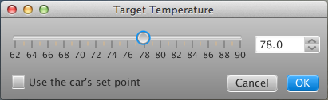
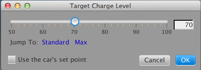
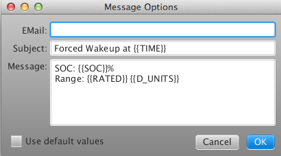

The Scheduler Tab
VisibleTesla includes the capability to run scheduled activities like charging your car or turning on/off your air conditioning. For scheduled events to be executed, Visible Tesla must be running. That is, if you schedule your vehicle to turn on the HVAC system at 7:30AM so that your car is warm by the time you get to it at 7:45, then VisibleTesla must be running at 7:30AM to issue the commands. The screen shot below shows the Scheduler Tab.

Each row represents a command that can be scheduled independently. There are 16 rows meaning that up to 16 distinct schedules can be set. Only 8 rows are visible at a time. A scrollbar provides access to the full list. The fields for each row are as follows:
| Column | Description |
|---|---|
| On? | If selected then this schedule is active. If not selected, VT will remember the scheduled event, but not execute it. When this checkbox is not selected, the rest of the row is greyed-out to avoid a mis-perception that the schedule is still active. |
| Sunday-Saturday | The scheduled event will be executed only on the selected days. |
| Time | The time at which the command will be executed. Minutes can be specified with a granularity of 5 minutes (00, 05, 10, ...) |
| Once | If selected, the command will be executed one time and then this schedule item will be automatically disabled. For example, let's say you want to pre-heat the car at 6:00AM tomorrow morning, but that is a special case. You only want to do that tomorrow. You could remember to go back into the scheduler tomorrow afternoon and disable this item, but by using the Once checkbox, you don't have to. |
| Command | The Command to execute. |
The following table lists all of the available commands, what they do, and what options (if any) are available.
| Command | Description |
|---|---|
| HVAC: On |
Turn on the HVAC system.
Note that when you select this option, a button appears next to the command name. The button is labeled with a "+" to indicate that there are more options. Pressing this button pops up a dialog box that allows you to select the target temperature. When the HVAC On command runs at its scheduled time, VisibleTesla will first set the temperature to the desired level. The temperature options dialog lets you use a slider to select a temperature, or you can type a value into a text box. Alternatively, you can select a checkbox named "Use the car's set point". If you do that, the slider and text box will be greyed out and the temperature will not be set to a new value. In this case, it will just use the car's current temperature setting. If you never pop up the dialog, it will behave as if you selected "Use the car's set point". |
| HVAC: Off | Turn off the HVAC system. |
| Charge: Start |
Start Charging the vehicle.
Note that when you select this option, a button appears next to the command name. The button is labeled with a "+" to indicate that there are more options. Pressing this button pops up a dialog box that allows you to select the target charge level. When the Charge: Start command runs at its scheduled time, VisibleTesla will first set the charge target to the desired level. The options dialog lets you use a slider to select the charge level, or you can use the Standard / Max buttons to jump to a predetermined setpoint. Alternatively you can select a checkbox named "Use the car's set point". If you do that, the slider will be greyed out and the charge level will not be set to a new value. In this case, it will just use the car's current setting. If you never pop up the dialog, it will behave as if you selected "Use the car's set point". |
| Charge: Stop | Stop Charging the vehicle. |
| Charge: Set |
Set the vehicle's charge target.
When you select this option, a button appears next to the command name. Press the button and select the desired charge level just as you would for the Charge: Start command. When Charge: Set is executed, it will set the car's charge target to the specified level, but will not start the charging process. This command can be used in conjunction with the car's built-in charge timer. |
| Sleep | Equivalent to the user selecting the Options→Inactivity Mode→Allow Sleeping menu item. |
| Daydream | Equivalent to the user selecting Options→Inactivity Mode→Allow Daydreaming menu item. |
| Awake | Equivalent to the user selecting Options→Inactivity Mode→Stay Awake menu item. |
| Unplugged? | Test whether the car is unplugged and if so, send a notification to the user. This is like a timed notification. If your car is unplugged, the notification will include the car's remaining range. That way you can decide whether or not to go plug it in. |
| Message | Send a message to the specified email address at the scheduled time. You may specify the contents of the message body and the subject line by pressing the + button to the right of the Message command. This will pop up a dialog that lets you enter an email address (leave this blank to use the default value from the Prefs Tab), a subject, and a message body. Both the subject and the message body can contain vehicle state variables such as SOC, range, or location. To understand how variables work, please refer to the Customizing Notifications section of the Notify Tab. |
| None | Don't execute a command of any type. |
The options dialogs for the HVAC: On and Charge: Set/Start commands are shown below:


The following screenshot shows the options dialog for the Message command:

Note: The Sleep, Daydream, and Stay Awake commands can be used, for example, to tell the app to sleep at night and daydream during the day. Executing one of these commands simply causes the app to enter the associated inactivity mode. The app must still be idle for 15 minutes before it will sleep or daydream.
Warning: Please remember that using this functionality can trigger activity that depletes your battery. You are solely responsible for any negative consequences that this might produce. Any scheduled command that might use significant power (at the moment this is just the HVAC On command) will respect the Safe settings in the Scheduler section of the Prefs Tab. If the specified requirements are not met, the command will not be executed.